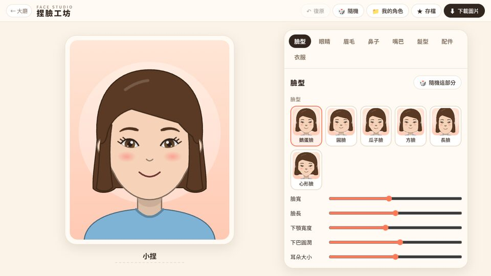

MW · Game Hall
遊戲大廳
選一款遊戲開始。每款都直接在瀏覽器執行，不需要安裝。
 1
1噗噗的遊戲小屋
向當年「好玩遊戲區」致敬的小遊戲合輯，打開就能玩。反應遊戲有下樓梯、接水果、敲地鼠、排球（可兩人對打）、疊疊高樓、釣魚（有魚類圖鑑）、打磚塊、節奏樂園（跟著音樂敲果凍鼓）、跑跑跑、毛毛蟲、開車車、對對碰（兩人同一台平板面對面）；益智遊戲有大家來找碴、翻翻記憶、十乘十方塊、泡泡龍、連連看、彩虹倒水瓶、消消樂、拼拼圖、走迷宮、下棋（黑白棋和五子棋，可對電腦或兩人對下）、聽聽看（用耳朵玩的記憶遊戲）；扮家家酒和畫畫有小廚房、小廚房第二季、換裝屋、著色本、小鋼琴、小寵物、蓋房子。首頁的噗噗會跟著玩過的遊戲長大，每款都記錄最高分，紀錄可以備份搬到別台。
進入遊戲 → 2
2大家一起玩
一台大螢幕，每個人拿自己的手機當手把。掃一次 QR code 就加入，第一個加入的人當房主，負責選遊戲。比賽有碰碰島、塗塗樂、搶果果、鬼抓人、雪球大戰、躲躲球，合作有趕羊羊和一起救火。每款都分小朋友模式和大人模式。
進入遊戲 → 3
3ABC Island
給幼兒園孩子的英文遊戲，由小狐狸 Pip 用語音帶著玩：描小寫字母、找開頭音、拼單字、單字圖卡，還能和 Pip 用英文聊天。完成就得到貼紙，貼在自己的小島上。
進入遊戲 → 4
4ㄅㄆㄇ 小島
給幼兒園孩子的注音符號遊戲，台灣藍鵲小藍用台灣腔帶著玩：認識 37 個注音、聽音找注音、找出第一個音、把注音拼進格子，還有一二三四聲。完成就得到貼紙。
進入遊戲 → M
M123 小島
給幼兒園孩子的數學遊戲，台灣黑熊小黑用語音帶著玩：從數數、比多少開始，到分與合、湊十、看圖小故事學加減法、青蛙數線、幾個一盤的乘法和分給小熊的除法。還有餵動物、戳氣球、魚缸、湊數配對四款小遊戲。答錯會一步一步示範，完成就得到貼紙。
進入遊戲 → 5
5Cobble Keep
DOOM 操作手感的 3D 第一人稱射擊，明亮、有光影的立體畫面。黑暗巫師的怪物佔領了城堡：揮符文劍、用魔杖和連弩打倒哥布林、蝙蝠和幽魂騎士，收集鑰匙，敲響終點方塊。
進入遊戲 → 6
6銘甲戰記
像素風的機器人戰棋，有必殺技演出與原創音樂。15 章、三條路線、五種結局與轉職系統。
進入遊戲 → 7
7Sunny Circuit
3D 賽車，六款各具特色的擬真車款。六條賽道從農田、海島、雪山、沙漠、夜晚的港口城市到秋天的楓葉森林，可以單場比賽、挑戰六站大獎賽，或和自己最快圈的幽靈車計時賽。贏獎金買新車和零件，五種難度的對手會走線、卡位、尾流和彈射起步，還有雨雪天氣和輪胎磨耗。
進入遊戲 → 8
8Crystal Outpost
星海爭霸風格的明亮即時戰略。三個玩法完全不同的陣營：機械的藍色前哨（各建築排隊生產、工人修理、掃描找出潛伏的敵人）、花草蟲子「綻放族」（心樹用種子一次孵化多隻、建築只能長在活地上），或水晶生命「晶族」（護盾會再生、建築靠晶塔供電、援軍直接傳送到前線）。六關教學任務、2 對 2 與電腦盟友並肩作戰。
進入遊戲 → 9
9小夥伴大作戰
向《小朋友齊打交》致敬的橫向格鬥。Q 版小朋友在台灣老街、夜市、茶園和漁港打跑搗蛋的動物怪獸，四關各有魔王和小劇情。撿雨傘、丟拖鞋和鞭炮、吃雞排補血；對戰模式在頂樓、夜市、捷運站、海邊大亂鬥。兩個人可以擠同一台，三、四個人可以拿手機當手把。
進入遊戲 →
0捏臉工坊
自己捏一個角色：調整臉型、眼睛、眉毛、鼻子、嘴巴，挑髮型、瀏海、眼鏡和衣服。每個選項都有即時預覽，眼睛會跟著游標轉。可以存成自己的角色收藏，或下載成圖片。
進入遊戲 →